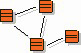

| Артефакт: User-Experience Navigation Map |
|  |
|
The purpose of the User-Experience Navigation Map is to represent the Navigation Map in terms of User-Experience Elements. The scope of the User-Experience Navigation Map is the entire application, as opposed to a storyboard participants diagrams, whose scope is a specific storyboard. The User-Experience Navigation Map serves as a backdrop and a link between the individual User-Experience Storyboard class diagrams. The User-Experience Storyboard class diagrams contain the User-Experience Elements that participate in the storyboard, where the Navigation Map diagram(s) contain all of the architecturally significant User-Experience Elements. The User-Experience Navigation Map conveys the structure of the User-Experience Model. |
| Артефакт-контейнер | ||
|---|---|---|
| Роли | Ответственный: | Изменен: |
| Основное описание | The User-Experience Navigation Map shows the User-Experience Elements and the navigation paths between them. The User-Experience Elements are not contained within the Navigation Map, but are represented by it. In other words, the User-Experience Navigation Map does not "own" any elements. |
|---|
| Опции представления | UML Representation: Class diagram(s) that contain User-Experience Elements and their navigation associations. The User-Experience Navigation Map may be represented as a single diagram, or as a series of diagrams if there are too many User-Experience Elements and/or navigation paths to be displayed on a single diagram. The level-of-detail displayed on the User-Experience Navigation Map can be also be adjusted. For example, the User-Experience Elements' content and/or user actions may be selectively shown, or suppressed altogether. For more information on how to model the User-Experience Navigation Map, see Guideline: User-Experience Navigation Map. |
|---|
| Справочные таблицы | |
|---|---|
| Рекомендации |
© Copyright IBM Corp. 1987, 2006. Все права защищены.. |